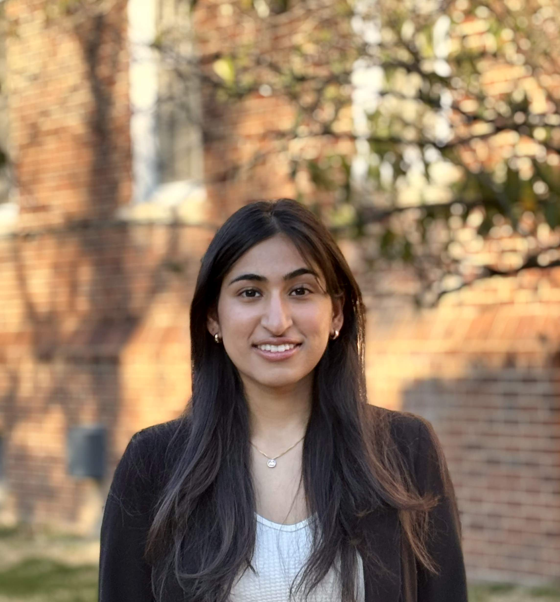

Hi everyone, my name is Riya!
I am sophomore at University of Maryland, and I am majoring in Computer Science
Some of my skills and coursework include:
Relevant Coursework: Object-Oriented Programming, Data Structures & Algorithms, Discrete Structures, Computer Systems
Languages & Technologies: Java, Python, HTML, CSS, JavaScript, Microsoft Office, Excel, PowerPoint
BOOTCAMP STUDENT - App Development Club
Gaining skills in Git/GitHub, React, HTML, CSS, JavaScript, backend with Fast API, databases with SQL Lite, and both front-end and back-end development with the goal of creating a full stack web application at the end. Selected from a competitive pool of 500+ applicants alongside 30 peers to participate in an intensive web development boot camp. Receiving mentorship from those who have worked at companies like Google, Amazon, Capital One and other industry leads. Mentorship focused on developing skills in software engineering and consulting.
ADVISOR - CS Undergraduate Advising Office, University of Maryland
Providing student-centered guidance for navigating the Computer Science degree and academic experience. Serving as the primary point of contact, adept at triaging student requests, and collaborating on academic planning. Responsibilities include effectively communicating with students and advisors, organizing and managing academic plans, offering general support to ensure smooth and efficient operations within the advising office, through Microsoft Office facilities.
SWE FELLOW - Headstarter AI
Built 5 AI applications in 5 weeks, participated 5 weekend hackathons, with the goal of my final project gaining 1000 users and generating at least $1000 in revenue. Worked closely alongside software engineers from industry leaders like Google, Apple, Meta, and other top tier startups.
PROGRAMMER & DESIGNER - Break Through Tech, University of Maryland
Worked as a designer and programmer on an application aimed to reduce users' climate impact. Backend development through Python-Flask, and frontend through Figma and HTML. Worked in a group of 4 and developed project from an idea to a working prototype
CO-PRESIDENT - Sea Falcon Robotics, Pennsbury High School
Internationals (2020) and (2023). Competed in Navy-run challenges using underwater Sea Perch. Brainstormed builds and ways to navigate an obstacle course and complete challenges. Ran meetings, sent emails, made presentations, recruited members, and ran fundraisers. Taught and built obstacle courses and bot mechanics to others.
DEBATE CAPTAIN & OVERALL TREASURER - Pennsbury Speech and Debate, Pennsbury High School
Mentored 40+ members in Public Forum, conducting practice rounds and providing feedback. Achieved notable distinctions including NSDA Nationals participation in World School and Extemporaneous Debate (2021-2022), PHSSL Quarterfinalist, and multiple first-place wins at invitational and league tournaments.
HARVARD DEBATE CAMP - Harvard University
Achieved quarterfinalist standing and 2nd place in cohort at National Speech and Debate Association camp tournament; honed research, case writing, and strategic communication skills.